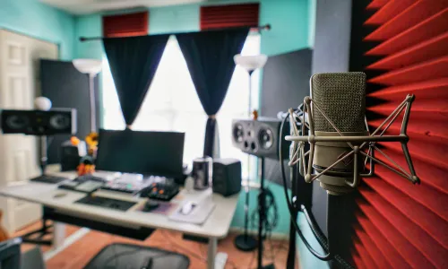

.jpg)
Popular articles

Helping you archieve the best Quality sound for your mix !
Ultimate Guide to Setting Up Your Home Studio for Professional Sound Quality
Creating a home studio that rivals professional setups is more achievable than ever, especially with the right equipment and setup techniques. In this comprehensive guide, we'll explore essential steps to help you optimize your home studio for superior sound quality. Whether you're a musician, podcaster, or content creator, these tips will ensure your recordings sound polished and professional. Let's dive in!
Choosing the Right Studio Headphones
When setting up your home studio, one of the most critical investments is in studio headphones. Opting for a model like the *Sony WH-1000XM4* can significantly enhance your monitoring experience. These headphones, as previously reviewed, offer exceptional sound clarity and precise audio reproduction, making them ideal for critical listening during recording and mixing sessions.
Essential Equipment for Your Home Studio
Beyond headphones, essential equipment includes an audio interface, microphones, and acoustic treatment. An image illustrating a well-equipped studio with these components strategically placed would be beneficial. Investing in an audio interface such as Focusrite Scarlett or Universal Audio Apollo ensures high-quality analog-to-digital conversion, crucial for capturing clear and detailed audio. Pairing this with a versatile microphone like the Shure SM7B or Neumann TLM 102 enables you to capture vocals and instruments with professional-grade clarity and warmth.
Optimizing Your Studio Space
Creating an optimal studio space involves addressing acoustics and layout. Begin by treating your room with acoustic panels or foam to minimize reflections and achieve a balanced sound environment. Consider furniture placement and room layout to enhance workflow and comfort during recording and mixing sessions. An image of a studio with acoustic panels installed on walls and ceiling, alongside ergonomic studio furniture, would visually convey these setup considerations.
Recording Techniques and Best Practices
Mastering recording techniques is essential for achieving professional sound quality in your home studio. Positioning your microphone correctly, managing gain levels, and using pop filters or isolation shields can significantly impact the clarity and depth of your recordings. Providing images demonstrating microphone placement techniques and the use of pop filters would offer practical visual aids for readers to understand and implement these techniques effectively.
Software and Digital Tools
Choosing the right software and digital tools is crucial for editing, mixing, and mastering your recordings. Popular options like Pro Tools, Logic Pro, or Ableton Live provide powerful features for audio production across various genres and styles. Screenshots of these software interfaces or a demonstration of digital audio workstations (DAWs) in action would illustrate their capabilities and help readers make informed choices based on their specific needs and preferences.
Image Placement: Include screenshots of digital audio workstation (DAW) interfaces or software in use on a computer screen to showcase their functionality.Troubleshooting and Common Challenges
Anticipating and addressing common challenges in home studio setups is key to maintaining smooth operations. Issues such as background noise, audio latency, or compatibility issues with hardware can disrupt your workflow. Providing images demonstrating troubleshooting steps or equipment setups that mitigate these challenges would assist readers in overcoming technical hurdles effectively.
Conclusion
By following these steps and investing in quality equipment like the Sony WH-1000XM4 headphones, you can transform your home studio into a professional-grade environment capable of delivering exceptional sound quality. Whether you're recording music, podcasts, or voiceovers, the right setup enhances your creativity and ensures your productions stand out. Embrace the journey of refining your home studio setup, and enjoy the satisfaction of achieving studio-quality sound from the comfort of your own space.

About Raas Lobby
Welcome to Raas Lobby, a comprehensive hub for music producers, artists, and enthusiasts. Founded by Robins Banda, known in the music world as Raas Flow, Raas Lobby is more than just a website – it’s a brand dedicated to providing the best tips, reviews, and insights in the music production industry.
Our Mission At Raas Lobby
our mission is to empower music producers with the best tips and advice while sharing our journey in music production. We strive to provide in-depth reviews of music equipment, essential information for beginners and experts alike
Our Story
Raas Lobby was created in 2024 by Robins Banda, a passionate music producer who wanted to share his knowledge and experience with the world. With a deep love for music and a keen eye for quality equipment, Robins set out to build a platform that would serve as a valuable resource for the music community.
What Sets Us Apart
What makes Raas Lobby unique is our commitment to delivering high-quality, reliable information. Whether you're a novice producer or a seasoned artist, our content is tailored to meet your needs. From honest equipment reviews to practical production tips, we provide everything you need to elevate your music game.